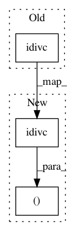

c620078136fb7a8ad3e52fa64bbea041a3b44dbd,nn_dataflow/Partition.py,,gen_layer_naive_partition2d,#Any#Any#,128
Before Change
layer_part = Layer(layer.nifm,
Util.idivc(layer.nofm, partition2d[pe.OUTP].size()),
Util.idivc(layer.sofm, partition2d[pe.OFMP].h),
layer.sfil,
layer.strd)
After Change
layer_part = Layer(layer.nifm,
Util.idivc(layer.nofm, partition2d[pe.OUTP].size()),
(Util.idivc(layer.hofm, partition2d[pe.OFMP].h),
Util.idivc(layer.wofm, partition2d[pe.OFMP].w)),
layer.sfil,
layer.strd)
In pattern: SUPERPATTERN
Frequency: 3
Non-data size: 3
Instances
Project Name: stanford-mast/nn_dataflow
Commit Name: c620078136fb7a8ad3e52fa64bbea041a3b44dbd
Time: 2017-03-17
Author: mgao12@stanford.edu
File Name: nn_dataflow/Partition.py
Class Name:
Method Name: gen_layer_naive_partition2d
Project Name: stanford-mast/nn_dataflow
Commit Name: 4fb88fdc63292d93ce2fdbbf77a4043f18b2c769
Time: 2017-05-03
Author: mgao12@stanford.edu
File Name: nn_dataflow/PartitionScheme.py
Class Name: PartitionScheme
Method Name: part_layer
Project Name: stanford-mast/nn_dataflow
Commit Name: c620078136fb7a8ad3e52fa64bbea041a3b44dbd
Time: 2017-03-17
Author: mgao12@stanford.edu
File Name: nn_dataflow/Partition.py
Class Name:
Method Name: gen_layer_partition2d